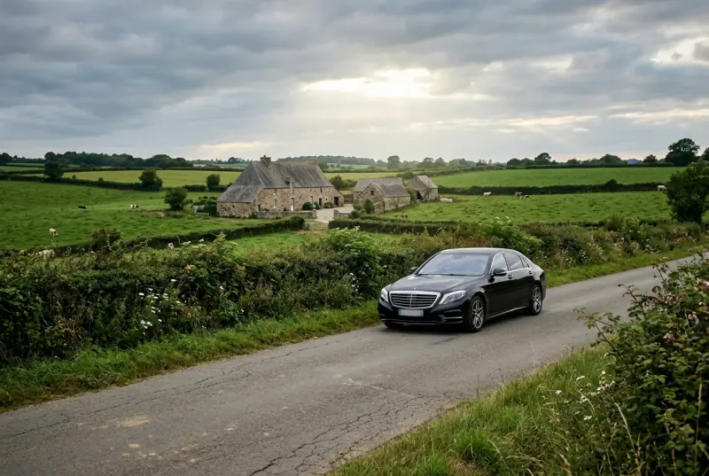
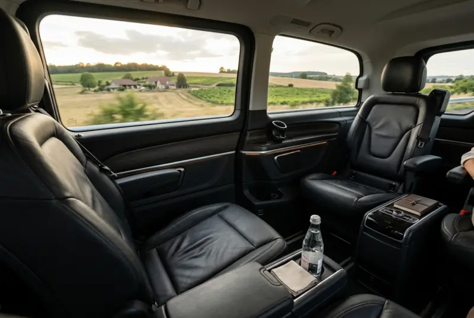
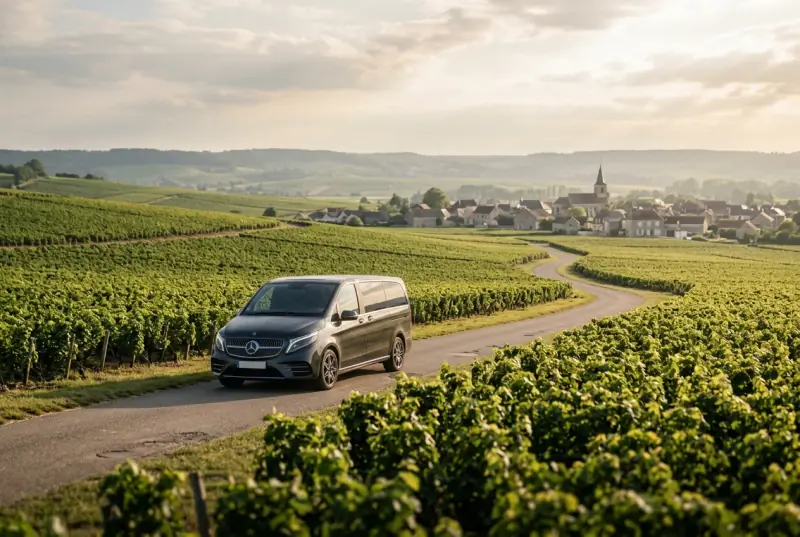
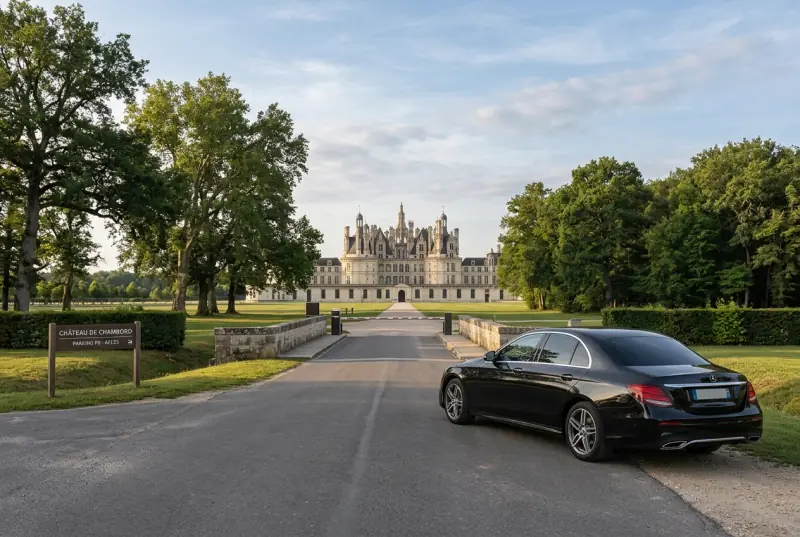
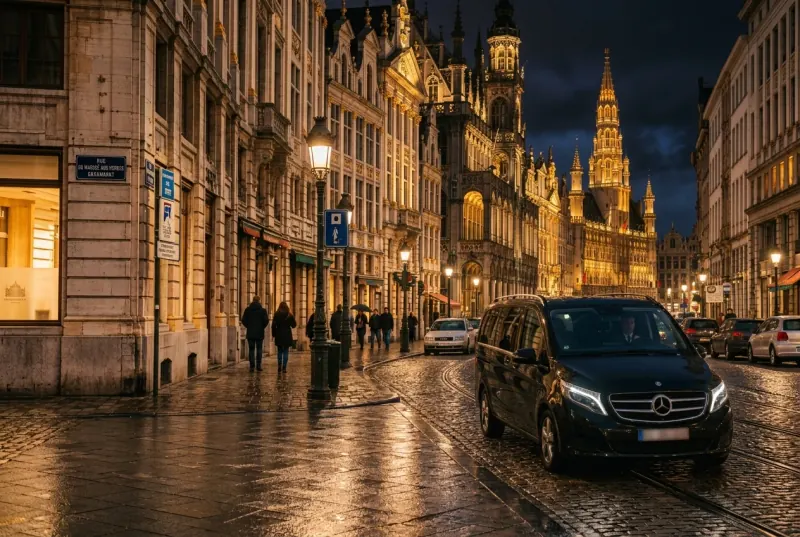
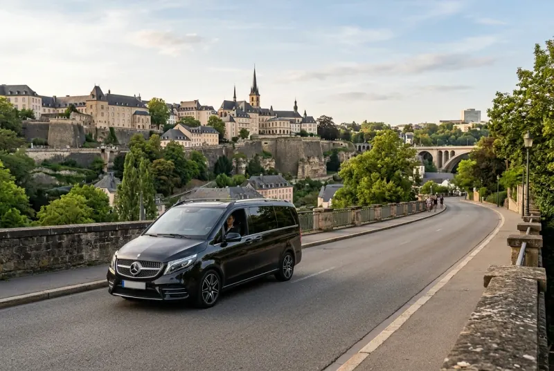
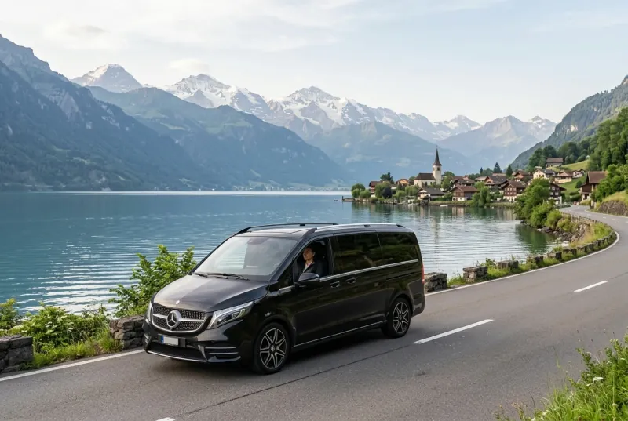
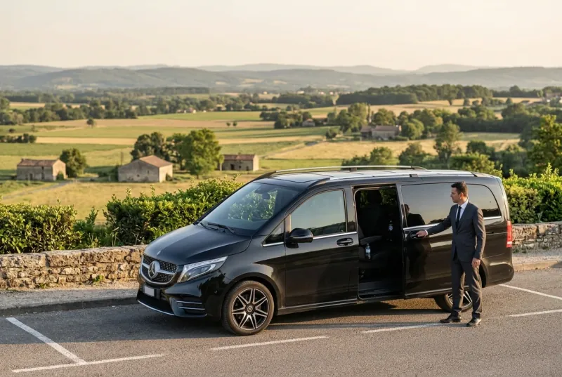
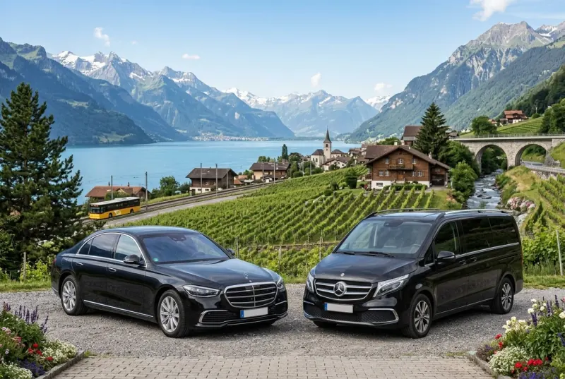

Paris ↔ Normandy
Travel privately from Paris to Normandy and enjoy a comfortable journey directly to destinations such as Rouen, Caen, Bayeux, Honfleur and the Normandy coast.
- ✓ Rouen
- ✓ Caen
- ✓ Bayeux
- ✓ Honfleur
- ✓ Normandy Coast
Travel across France and Europe in comfort with a private chauffeur and a premium vehicle, directly from your hotel, airport or chosen address.

Travel beyond Paris with a private long-distance chauffeur service across France and Europe. Enjoy a comfortable door-to-door journey from your hotel, residence or airport, with a premium vehicle and an itinerary tailored to your needs.
Private chauffeur journeys from Paris and Ile-de-France to some of the most requested destinations across France and selected European routes.

Travel privately from Paris to Normandy and enjoy a comfortable journey directly to destinations such as Rouen, Caen, Bayeux, Honfleur and the Normandy coast.
Enjoy a private transfer from Paris to Reims and the Champagne region, with direct pick-up from your hotel, residence or airport.


Travel from Paris to the Loire Valley in complete comfort with your own private chauffeur and premium vehicle.
Avoid airport and train connections with a private door-to-door journey between Paris and Brussels.


Enjoy a comfortable private journey between Paris and Luxembourg with flexible pick-up and a professional chauffeur.
Long-distance private transfers from Paris to selected destinations in Switzerland are available on request.

Comfort, flexibility and direct travel for journeys that go well beyond a standard city transfer.
Travel directly from your accommodation to your final destination.
Keep your luggage with you without navigating stations or connections.
Choose a departure time that fits your itinerary.
The vehicle is reserved exclusively for you and your passengers.
Enjoy a premium vehicle with planned rest stops when required.
Travel with an experienced private chauffeur throughout your journey.

A long-distance private transfer gives you the freedom to travel at your own pace. Depending on your itinerary, stops can be arranged for rest, refreshments or other requirements along the journey.
If you need a customised itinerary or multiple stops, you can also explore our hourly chauffeur service for more flexible travel within Paris before or after your journey.
Plan Your JourneyComfort-focused vehicles for private journeys across France and Europe

Travel in comfort with our selection of premium vehicles, carefully chosen for long-distance journeys. Whether you are travelling alone, as a couple, with your family or as a group, we can provide a vehicle adapted to your passenger and luggage requirements.
Premium vehicles designed for comfortable long journeys
Vehicle options adapted to passengers and luggage
Professional chauffeur throughout your journey
Practical answers about booking a private chauffeur for long-distance journeys from Paris.
We provide long-distance private transfers to numerous destinations throughout France and selected European countries. Contact us for availability for your specific journey.
Yes. International transfers to selected European destinations are available on request.
Yes. Rest stops can be arranged during long journeys, and customised stops may also be possible depending on your itinerary.
Yes. Door-to-door pick-up can be arranged from hotels, private residences, airports and other agreed locations.
Yes. Vehicle selection can be adapted to the number of passengers and amount of luggage. Please provide accurate luggage information when booking.
Prices depend on the destination, vehicle, itinerary and any additional requirements. Contact us for a personalised quote for your journey.
From Paris to destinations across France and Europe, enjoy a comfortable door-to-door journey with a professional private chauffeur.